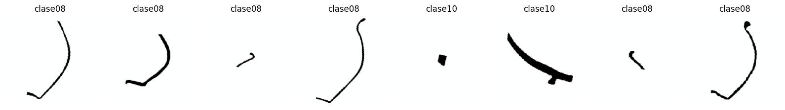
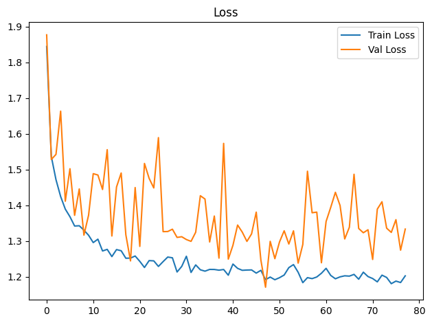
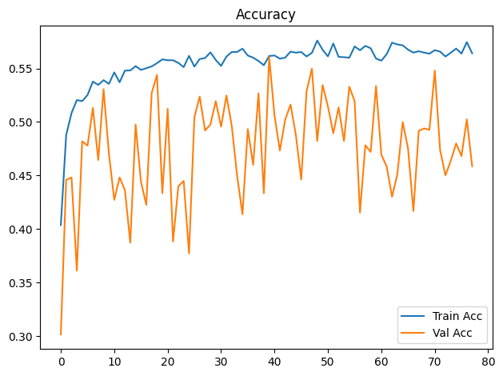
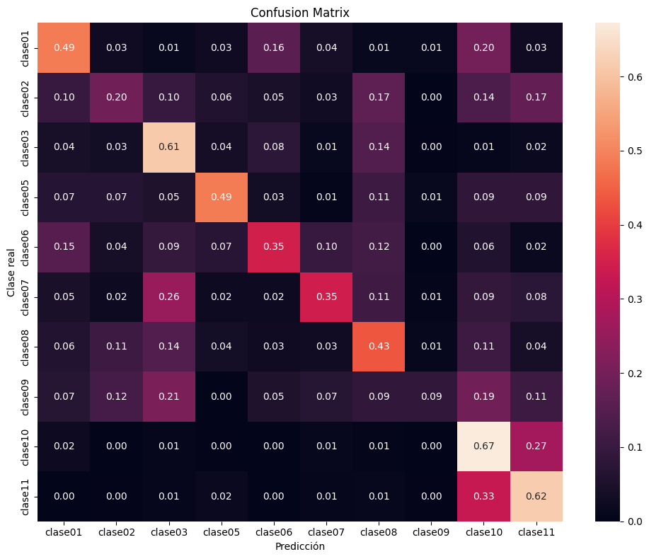

Dispositivo utilizado para procesamiento: CUDA - NVIDIA GeForce GTX 1650Entrenamiento de CNN ResNet-18 con Transfer Learning
Objetivos
- Construir un modelo baseline de clasificación mediante transfer learning con ResNet18 preentrenada.
- Entrenar inicialmente solo la capa clasificadora y descongelar
layer4enUNFREEZE_EPOCHcon una tasa de aprendizaje menor. - Aplicar transformaciones y aumentación de datos al conjunto de entrenamiento.
- Entrenar y validar el modelo registrando loss y accuracy por época.
- Detener el entrenamiento si val_loss no mejora suficientemente durante la paciencia configurada.
- Evaluar el modelo de la mejor época de validación sobre el conjunto de prueba.
- Analizar los resultados mediante accuracy, precision, recall, F1-score, reporte de clasificación y matriz de confusión normalizada.
- Guardar los pesos restaurados de la mejor época de validación (o los finales si se desactiva la parada anticipada).
Dispositivo para procesamiento
División de datos
La pertenencia de cada imagen a train, val o test se lee de la metadata generada por el notebook de división. La relación se realiza mediante ruta_relativa; por tanto, el split no se recalcula aunque cambien la semilla o los parámetros del entrenamiento.
Dataset seleccionado: unificado
Directorio de datos: /home/rafael/Dev/vasijas/data/12.unificado_divididos_en_train_val_y_test
Metadata de split: data/12.unificado_divididos_en_train_val_y_test/metadata.csv
Clases: clase01 clase02 clase03 clase05 clase06 clase07 clase08 clase09 clase10 clase11
Split persistido -> train: 14231, val: 3059, test: 3059
Conteo train por clase: [342, 608, 950, 741, 684, 646, 3724, 266, 4712, 1558]
Pesos de clase: [4.161, 2.341, 1.498, 1.921, 2.081, 2.203, 0.382, 5.35, 0.302, 0.913]Epoch 1/300
Train Loss: 1.8448 | Train Acc: 0.4038 | Val Loss: 1.8773 | Val Acc: 0.3017
Tiempo de epoch: 0:01:29.430622
Epoch 2/300
Train Loss: 1.5367 | Train Acc: 0.4877 | Val Loss: 1.5285 | Val Acc: 0.4459
Tiempo de epoch: 0:01:22.938091
Epoch 3/300
Train Loss: 1.4720 | Train Acc: 0.5083 | Val Loss: 1.5427 | Val Acc: 0.4482
Tiempo de epoch: 0:01:22.752120
Epoch 4/300
Train Loss: 1.4248 | Train Acc: 0.5204 | Val Loss: 1.6637 | Val Acc: 0.3612
Tiempo de epoch: 0:01:22.959100
Epoch 5/300
Train Loss: 1.3896 | Train Acc: 0.5195 | Val Loss: 1.4117 | Val Acc: 0.4819
Tiempo de epoch: 0:01:23.243308
Epoch 6/300
Train Loss: 1.3683 | Train Acc: 0.5252 | Val Loss: 1.5026 | Val Acc: 0.4779
Tiempo de epoch: 0:01:22.894588
Epoch 7/300
Train Loss: 1.3423 | Train Acc: 0.5377 | Val Loss: 1.3722 | Val Acc: 0.5132
Tiempo de epoch: 0:01:22.953212
Epoch 8/300
Train Loss: 1.3430 | Train Acc: 0.5346 | Val Loss: 1.4460 | Val Acc: 0.4645
Tiempo de epoch: 0:01:23.293149
Epoch 9/300
Train Loss: 1.3306 | Train Acc: 0.5390 | Val Loss: 1.3168 | Val Acc: 0.5306
Tiempo de epoch: 0:01:22.904385
Epoch 10/300
Train Loss: 1.3164 | Train Acc: 0.5356 | Val Loss: 1.3726 | Val Acc: 0.4704
Tiempo de epoch: 0:01:22.829857
Epoch 11/300
Train Loss: 1.2959 | Train Acc: 0.5463 | Val Loss: 1.4888 | Val Acc: 0.4273
Tiempo de epoch: 0:01:23.040315
Epoch 12/300
Train Loss: 1.3055 | Train Acc: 0.5371 | Val Loss: 1.4850 | Val Acc: 0.4482
Tiempo de epoch: 0:01:22.810076
Epoch 13/300
Train Loss: 1.2724 | Train Acc: 0.5480 | Val Loss: 1.4445 | Val Acc: 0.4364
Tiempo de epoch: 0:01:23.019862
Epoch 14/300
Train Loss: 1.2770 | Train Acc: 0.5481 | Val Loss: 1.5559 | Val Acc: 0.3874
Tiempo de epoch: 0:01:23.072123
Epoch 15/300
Train Loss: 1.2567 | Train Acc: 0.5521 | Val Loss: 1.3144 | Val Acc: 0.4975
Tiempo de epoch: 0:01:22.867225
Epoch 16/300
Train Loss: 1.2764 | Train Acc: 0.5486 | Val Loss: 1.4515 | Val Acc: 0.4443
Tiempo de epoch: 0:01:22.936627
Epoch 17/300
Train Loss: 1.2731 | Train Acc: 0.5502 | Val Loss: 1.4906 | Val Acc: 0.4227
Tiempo de epoch: 0:01:22.878854
Epoch 18/300
Train Loss: 1.2521 | Train Acc: 0.5518 | Val Loss: 1.3178 | Val Acc: 0.5270
Tiempo de epoch: 0:01:22.850281
Epoch 19/300
Train Loss: 1.2525 | Train Acc: 0.5549 | Val Loss: 1.2447 | Val Acc: 0.5440
Tiempo de epoch: 0:01:22.798660
Epoch 20/300
Train Loss: 1.2583 | Train Acc: 0.5584 | Val Loss: 1.4499 | Val Acc: 0.4335
Tiempo de epoch: 0:01:22.885516
Epoch 21/300
Train Loss: 1.2433 | Train Acc: 0.5577 | Val Loss: 1.2852 | Val Acc: 0.5123
Tiempo de epoch: 0:01:22.976874
Epoch 22/300
Train Loss: 1.2262 | Train Acc: 0.5576 | Val Loss: 1.5174 | Val Acc: 0.3884
Tiempo de epoch: 0:01:23.437662
Epoch 23/300
Train Loss: 1.2455 | Train Acc: 0.5551 | Val Loss: 1.4757 | Val Acc: 0.4400
Tiempo de epoch: 0:01:22.876366
Epoch 24/300
Train Loss: 1.2448 | Train Acc: 0.5512 | Val Loss: 1.4488 | Val Acc: 0.4449
Tiempo de epoch: 0:01:22.961212
Epoch 25/300
Train Loss: 1.2292 | Train Acc: 0.5617 | Val Loss: 1.5896 | Val Acc: 0.3772
Tiempo de epoch: 0:01:22.909252
Epoch 26/300
Train Loss: 1.2426 | Train Acc: 0.5517 | Val Loss: 1.3265 | Val Acc: 0.5044
Tiempo de epoch: 0:01:22.934609
Epoch 27/300
Train Loss: 1.2554 | Train Acc: 0.5588 | Val Loss: 1.3269 | Val Acc: 0.5237
Tiempo de epoch: 0:01:23.360156
Epoch 28/300
Train Loss: 1.2533 | Train Acc: 0.5597 | Val Loss: 1.3334 | Val Acc: 0.4920
Tiempo de epoch: 0:01:22.943217
Epoch 29/300
Train Loss: 1.2136 | Train Acc: 0.5650 | Val Loss: 1.3104 | Val Acc: 0.4975
Tiempo de epoch: 0:01:23.094834
Epoch 30/300
Train Loss: 1.2292 | Train Acc: 0.5579 | Val Loss: 1.3123 | Val Acc: 0.5195
Tiempo de epoch: 0:01:23.007048
Epoch 31/300
Train Loss: 1.2577 | Train Acc: 0.5523 | Val Loss: 1.3044 | Val Acc: 0.4956
Tiempo de epoch: 0:01:22.847706
Epoch 32/300
Train Loss: 1.2123 | Train Acc: 0.5610 | Val Loss: 1.2993 | Val Acc: 0.5247
Tiempo de epoch: 0:01:22.979238
Epoch 33/300
Train Loss: 1.2335 | Train Acc: 0.5653 | Val Loss: 1.3248 | Val Acc: 0.4962
Tiempo de epoch: 0:01:22.961664
Epoch 34/300
Train Loss: 1.2198 | Train Acc: 0.5654 | Val Loss: 1.4271 | Val Acc: 0.4498
Tiempo de epoch: 0:01:22.882507
Epoch 35/300
Train Loss: 1.2159 | Train Acc: 0.5684 | Val Loss: 1.4178 | Val Acc: 0.4139
Tiempo de epoch: 0:01:23.158262
Epoch 36/300
Train Loss: 1.2208 | Train Acc: 0.5620 | Val Loss: 1.2977 | Val Acc: 0.4933
Tiempo de epoch: 0:01:22.786918
Epoch 37/300
Train Loss: 1.2207 | Train Acc: 0.5600 | Val Loss: 1.3702 | Val Acc: 0.4600
Tiempo de epoch: 0:01:23.493217
Epoch 38/300
Train Loss: 1.2187 | Train Acc: 0.5570 | Val Loss: 1.2524 | Val Acc: 0.5266
Tiempo de epoch: 0:01:22.988123
Epoch 39/300
Train Loss: 1.2206 | Train Acc: 0.5529 | Val Loss: 1.5735 | Val Acc: 0.4335
Tiempo de epoch: 0:01:22.914195
Epoch 40/300
Train Loss: 1.2046 | Train Acc: 0.5616 | Val Loss: 1.2496 | Val Acc: 0.5606
Tiempo de epoch: 0:01:23.207746
Epoch 41/300
Train Loss: 1.2358 | Train Acc: 0.5621 | Val Loss: 1.2885 | Val Acc: 0.5060
Tiempo de epoch: 0:01:22.839599
Epoch 42/300
Train Loss: 1.2238 | Train Acc: 0.5591 | Val Loss: 1.3450 | Val Acc: 0.4734
Tiempo de epoch: 0:01:22.877101
Epoch 43/300
Train Loss: 1.2183 | Train Acc: 0.5600 | Val Loss: 1.3252 | Val Acc: 0.5021
Tiempo de epoch: 0:01:22.892000
Epoch 44/300
Train Loss: 1.2191 | Train Acc: 0.5657 | Val Loss: 1.2992 | Val Acc: 0.5162
Tiempo de epoch: 0:01:23.064067
Epoch 45/300
Train Loss: 1.2194 | Train Acc: 0.5647 | Val Loss: 1.3203 | Val Acc: 0.4877
Tiempo de epoch: 0:01:23.061817
Epoch 46/300
Train Loss: 1.2105 | Train Acc: 0.5653 | Val Loss: 1.3811 | Val Acc: 0.4462
Tiempo de epoch: 0:01:22.948053
Epoch 47/300
Train Loss: 1.2182 | Train Acc: 0.5612 | Val Loss: 1.2468 | Val Acc: 0.5286
Tiempo de epoch: 0:01:23.274126
Epoch 48/300
Train Loss: 1.1921 | Train Acc: 0.5645 | Val Loss: 1.1710 | Val Acc: 0.5499
Tiempo de epoch: 0:01:22.777100
Epoch 49/300
Train Loss: 1.1994 | Train Acc: 0.5760 | Val Loss: 1.2994 | Val Acc: 0.4822
Tiempo de epoch: 0:01:22.995638
Epoch 50/300
Train Loss: 1.1920 | Train Acc: 0.5674 | Val Loss: 1.2509 | Val Acc: 0.5345
Tiempo de epoch: 0:01:22.806021
Epoch 51/300
Train Loss: 1.1977 | Train Acc: 0.5612 | Val Loss: 1.2978 | Val Acc: 0.5145
Tiempo de epoch: 0:01:23.177296
Epoch 52/300
Train Loss: 1.2051 | Train Acc: 0.5733 | Val Loss: 1.3290 | Val Acc: 0.4894
Tiempo de epoch: 0:01:23.177090
Epoch 53/300
Train Loss: 1.2258 | Train Acc: 0.5607 | Val Loss: 1.2919 | Val Acc: 0.5136
Tiempo de epoch: 0:01:23.097033
Epoch 54/300
Train Loss: 1.2343 | Train Acc: 0.5605 | Val Loss: 1.3288 | Val Acc: 0.4822
Tiempo de epoch: 0:01:22.951903
Epoch 55/300
Train Loss: 1.2129 | Train Acc: 0.5600 | Val Loss: 1.2384 | Val Acc: 0.5329
Tiempo de epoch: 0:01:22.868083
Epoch 56/300
Train Loss: 1.1838 | Train Acc: 0.5705 | Val Loss: 1.2906 | Val Acc: 0.5195
Tiempo de epoch: 0:01:23.116686
Epoch 57/300
Train Loss: 1.1978 | Train Acc: 0.5669 | Val Loss: 1.4956 | Val Acc: 0.4155
Tiempo de epoch: 0:01:22.986491
Epoch 58/300
Train Loss: 1.1951 | Train Acc: 0.5710 | Val Loss: 1.3794 | Val Acc: 0.4783
Tiempo de epoch: 0:01:22.975907
Epoch 59/300
Train Loss: 1.1997 | Train Acc: 0.5688 | Val Loss: 1.3812 | Val Acc: 0.4720
Tiempo de epoch: 0:01:22.974226
Epoch 60/300
Train Loss: 1.2101 | Train Acc: 0.5592 | Val Loss: 1.2395 | Val Acc: 0.5335
Tiempo de epoch: 0:01:22.798071
Epoch 61/300
Train Loss: 1.2239 | Train Acc: 0.5572 | Val Loss: 1.3550 | Val Acc: 0.4694
Tiempo de epoch: 0:01:23.032283
Epoch 62/300
Train Loss: 1.2040 | Train Acc: 0.5633 | Val Loss: 1.3946 | Val Acc: 0.4583
Tiempo de epoch: 0:01:22.885950
Epoch 63/300
Train Loss: 1.1946 | Train Acc: 0.5740 | Val Loss: 1.4366 | Val Acc: 0.4302
Tiempo de epoch: 0:01:22.940706
Epoch 64/300
Train Loss: 1.2000 | Train Acc: 0.5723 | Val Loss: 1.3997 | Val Acc: 0.4515
Tiempo de epoch: 0:01:22.794113
Epoch 65/300
Train Loss: 1.2029 | Train Acc: 0.5716 | Val Loss: 1.3061 | Val Acc: 0.4998
Tiempo de epoch: 0:01:22.924007
Epoch 66/300
Train Loss: 1.2020 | Train Acc: 0.5675 | Val Loss: 1.3389 | Val Acc: 0.4750
Tiempo de epoch: 0:01:23.021671
Epoch 67/300
Train Loss: 1.2069 | Train Acc: 0.5648 | Val Loss: 1.4871 | Val Acc: 0.4168
Tiempo de epoch: 0:01:23.047963
Epoch 68/300
Train Loss: 1.1934 | Train Acc: 0.5660 | Val Loss: 1.3353 | Val Acc: 0.4917
Tiempo de epoch: 0:01:23.076705
Epoch 69/300
Train Loss: 1.2131 | Train Acc: 0.5648 | Val Loss: 1.3234 | Val Acc: 0.4940
Tiempo de epoch: 0:01:23.004617
Epoch 70/300
Train Loss: 1.2009 | Train Acc: 0.5638 | Val Loss: 1.3318 | Val Acc: 0.4926
Tiempo de epoch: 0:01:23.122227
Epoch 71/300
Train Loss: 1.1953 | Train Acc: 0.5670 | Val Loss: 1.2487 | Val Acc: 0.5479
Tiempo de epoch: 0:01:22.930144
Epoch 72/300
Train Loss: 1.1860 | Train Acc: 0.5657 | Val Loss: 1.3896 | Val Acc: 0.4737
Tiempo de epoch: 0:01:22.752085
Epoch 73/300
Train Loss: 1.2048 | Train Acc: 0.5611 | Val Loss: 1.4102 | Val Acc: 0.4501
Tiempo de epoch: 0:01:22.978222
Epoch 74/300
Train Loss: 1.1983 | Train Acc: 0.5647 | Val Loss: 1.3363 | Val Acc: 0.4639
Tiempo de epoch: 0:01:22.857371
Epoch 75/300
Train Loss: 1.1809 | Train Acc: 0.5685 | Val Loss: 1.3244 | Val Acc: 0.4799
Tiempo de epoch: 0:01:23.172003
Epoch 76/300
Train Loss: 1.1881 | Train Acc: 0.5638 | Val Loss: 1.3601 | Val Acc: 0.4681
Tiempo de epoch: 0:01:23.012898
Epoch 77/300
Train Loss: 1.1841 | Train Acc: 0.5745 | Val Loss: 1.2747 | Val Acc: 0.5025
Tiempo de epoch: 0:01:22.860484
Epoch 78/300
Train Loss: 1.2029 | Train Acc: 0.5641 | Val Loss: 1.3337 | Val Acc: 0.4586
Tiempo de epoch: 0:01:23.125659
Parada anticipada en epoch 78: 30 épocas sin mejora suficiente de val_loss.
Se restauran los pesos de epoch 48 (val_loss=1.1710).
Tiempo total de entrenamiento: 1:47:59.422259

Test Acc: 0.5240
precision recall f1-score support
clase01 0.21 0.49 0.30 76
clase02 0.17 0.20 0.18 133
clase03 0.38 0.61 0.47 209
clase05 0.52 0.49 0.50 152
clase06 0.43 0.35 0.39 152
clase07 0.40 0.35 0.37 133
clase08 0.75 0.43 0.55 798
clase09 0.24 0.09 0.13 57
clase10 0.71 0.67 0.69 1007
clase11 0.37 0.62 0.46 342
accuracy 0.52 3059
macro avg 0.42 0.43 0.40 3059
weighted avg 0.58 0.52 0.53 3059

Modelo guardado en: output/models/model_resnet18_unificado_bs32_lr1e-3_weighted.pth